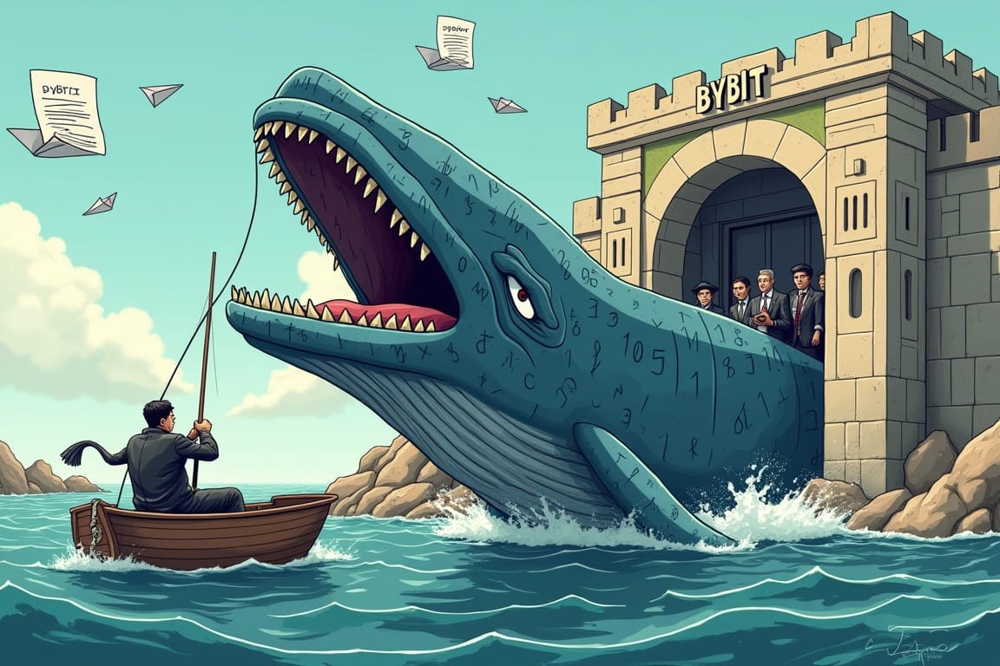
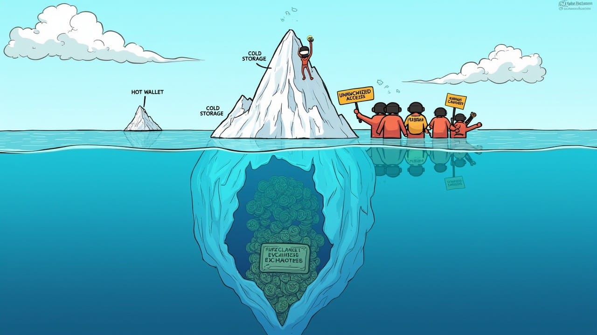

The $1.5 Billion Fishing Trip—How North Korea Caught the Biggest Crypto Whale Without Writing a Single Line of Code
North Korea's $1.5 billion crypto heist: No code, just a polite request. When state-of-the-art security crumbles with a click, who needs hackers? Dive into the tragicomic tale of how the world's most unhackable piggy bank was emptied by simply saying "please."


The most sophisticated technology is no match for the oldest vulnerability: human nature.
Introduction: The Emperor's New Cold Storage
$1.5 BLet’s be honest: if you spent the last decade building an "unhackable" financial system only to watch North Korea casually walk away…Let’s be honest: if you spent the last decade building an "unhackable" financial system only to watch North Korea casually walk away with $1.5 billion, you might need to reconsider your understanding of security. The Bybit heist of February 2025 wasn't just another notch in crypto's belt of embarrassments. It was the moment when the industry's grandiose security delusions came crashing down, toppled not by sophisticated code, but by the digital equivalent of "Hey, mind holding the door open for me?" The crown jewels of cryptocurrency, guarded by mathematical fortresses, were stolen with all the technical complexity of a polite email. It was as if Fort Knox had been emptied by a thief with a convincing smile and a clipboard.
5 MBy 2021, over 5 million traders had strapped in for Bybit's wild ride, drawn to its promise of eye-watering leverage and trades that…Bybit exploded onto the crypto scene in 2018, quickly becoming the rebellious teenager of derivatives exchanges. By 2021, over 5 million traders had strapped in for Bybit's wild ride, drawn to its promise of eye-watering leverage and trades that moved faster than regulators' heads could spin.
The most remarkable aspect? Not a single cryptographic algorithm was compromised. Not one blockchain was "hacked." Instead, North Korea's Lazarus Group demonstrated that the most sophisticated technological defenses can be rendered utterly meaningless by the simple act of asking nicely. It’s a solemn reminder that while encryption may secure data, it’s human nature that often poses the greatest risk.
The Anatomy of a Billion-Dollar Oopsie
The Embarrassingly Simple Heist: When "Please" Trumps Encryption
Picture this tragicomic scene: Bybit's CEO Ben Zhou diligently checking what appears to be an official interface. He verifies addresses, examines his hardware wallet, and confidently approves what he believes is a routine transfer. Minutes later, $1.5 billion—gone. The Bybit heist wasn't just a security breach - it was a humiliating reminder that all our cryptographic fortresses can crumble at the touch of a "Send" button. Imagine spending millions on an impenetrable vault, only to have the contents stolen by someone who simply asked, "Pretty please?" That's essentially what happened here.
Bruce Schneier once quipped that "Security is a process, not a product." But even he might have been caught off-guard by just how low-tech this high-stakes theft turned out to be. The Lazarus Group didn't need to crack any codes or exploit zero-day vulnerabilities. They realized the easiest firewall to bypass was the one between a CEO's ears.
This incident doesn't just illustrate human fallibility - it spotlights our industry's dangerous obsession with technological solutions at the expense of addressing the all-too-human weaknesses in our systems. We've built digital Fort Knoxes while forgetting that the most vulnerable part of any security system is the person holding the keys.
While crypto engineers were focused on zero-day exploits, North Korea recognized a far more efficient attack vector: Zero-Thought Approvals™️. In an era of technological marvels, it’s a stark realization that the true Achilles' heel lies in underestimating human susceptibility.
North Korea's Masterclass in Human Hacking: The Art of Digital Pickpocketing
While cryptocurrency evangelists were busy debating the finer points of zero-knowledge proofs and consensus algorithms, North Korea was studying something far more exploitable: people. The Lazarus Group has evolved from crude bank heists to what can only be described as performance art in social manipulation.
Consider the progression:
- 2014: "Let's hack Sony because they made fun of our Supreme Leader"
- 2017: "Let's deploy WannaCry and demand Bitcoin ransoms"
- 2020: "Let's find smart contract vulnerabilities"
- 2023: "Let's just ask them to give us the money"
In 2022, North Korea executed a series of sophisticated cryptocurrency heists, amassing an impressive $1.7 billion. This digital plundering surpassed traditional theft, rivaling historic acts of pillage. While the cryptocurrency community focused on decentralization, Kim Jong-un's regime demonstrated a masterclass in centralized crypto-theft, leaving both exchanges and regulators struggling to respond.
Chainalysis, the blockchain world's equivalent of a fortune-teller, dropped this bombshell in their 2023 report, confirming what we all secretly suspected: North Korea's hackers had officially outdone themselves, setting a new high score in the twisted game of "Who can fleece the crypto-bros fastest?"
The Crypto Contradictions: Reinvesting Old Mistakes
Same Banks, Different Jargon: The Great Decentralization Illusion
Here's the delicious irony of cryptocurrency's current predicament: after a decade of revolutionary rhetoric about dismantling centralized financial systems, the industry has meticulously reconstructed those same systems with different terminology.
- Traditional banks have vaults → Crypto exchanges have "cold storage"
- Banks have authorized signatories → Exchanges have "multi-signature wallets"
- Banks have transaction approval workflows → Exchanges have "governance protocols"
This reconstruction of traditional financial structures within the crypto space has not gone unnoticed by industry experts. As Andreas M. Antonopoulos, a renowned blockchain educator, pointed out in his book "The Internet of Money":
"We're not just recreating the same old systems. We're recreating the same old systems with the same old problems, but on a global scale with no firewalls."
The critical difference? Banking has had centuries to learn from security failures. Cryptocurrency exchanges apparently needed to lose billions to discover that humans might be persuaded to do unwise things. This cognitive dissonance is perhaps most evident in crypto's proudest security innovation—the multi-signature system that was supposed to make such attacks impossible.
The Multi-Signature Mirage: When More Keys Mean More Entry Points
Cryptocurrency's crown jewel of security—the multi-signature wallet. The theory: require multiple approvals to distribute trust. In practice, however, it exposed several fallible humans instead of one difficult target. It transformed robust security into something akin to replacing your front door with several paper windows and calling it "distributed access control."
To understand the concept of multi-signature wallets, consider this explanation from Vitalik Buterin, co-founder of Ethereum:
"Instead of one key controlling the account, you have multiple keys, and you need some threshold of those keys in order to do anything."
While this sounds secure in theory, the Bybit incident demonstrates how human error can undermine even this advanced system.
This miscalculation advises a crucial lesson: as systems become more complex, they must not underestimate human factors. As we look at cryptocurrency exchanges, this becomes glaringly apparent.
Garbage In, Garbage Out: The Eternal Verity That Crypto Forgot
The fundamental principle that North Korea understood—and the crypto industry catastrophically missed—is that systems process what they're given. If you input garbage (compromised approval decisions), you output garbage (catastrophic fund loss).
This isn't advanced cryptography; it's computing's oldest axiom. No amount of blockchain immutability can protect against authorized transactions that shouldn't have been authorized. The system performed exactly as designed—it's just that the design assumed inputs wouldn't be compromised by a persuasive email. Such systematic blindness to reality extends beyond technical architecture into something even more revealing: how cryptocurrency exchanges value their own security.
As cybersecurity researcher Ross Anderson famously stated,
"The economics of security is at least as important as the technology."
The Bybit incident starkly illustrates this principle, showing how economic incentives and human behavior can trump even the most advanced technological safeguards.
Systemic Vulnerabilities — Beyond the Code
The $4,000 Joke: When Your Bug Bounty Buys a Used Toyota
Perhaps nothing illustrates the industry's misaligned incentives better than Bybit's bug bounty program. Critical vulnerabilities—the kind that might lead to catastrophic loss—were rewarded with up to $4,000. That's right: discover a way to steal billions, and you'll receive compensation equivalent to a used Toyota Corolla.
To put this in perspective, major tech companies offer far more substantial rewards for critical vulnerabilities. For instance, Google's Vulnerability Reward Program has paid out as much as $31,337 for a single critical vulnerability. Apple's maximum bounty reaches $1 million for the most severe exploits. The disparity between these figures and Bybit's $4,000 cap is staggering.
Is it any wonder that researchers might look elsewhere to monetize their findings? This isn't just poor security practice—it's almost comically negligent, like offering burglars $20 not to rob your mansion. While exchanges pinch pennies on security, a new phenomenon has emerged that compounds the vulnerability: the rise of politically-charged tokens that create perfect cover for illicit fund movement.
Political Meme Coins: The New Laundromat for Dirty Digital Money
As if the situation weren't already sufficiently absurd, consider the emergence of politically-themed tokens in this ecosystem of vulnerability. TRUMP, BIDEN, and similar political meme coins present the perfect storm of regulatory confusion, passionate irrationality, and opacity.
As former CFTC chairman Timothy Massad warned in a 2019 report for the Brookings Institution,
"The current regulatory framework for cryptocurrencies is inadequate. Crypto assets which are securities are subject to securities regulation, but many, including Bitcoin, are not. No single regulatory agency has sufficient jurisdiction over crypto assets."
These tokens aren't just speculative vehicles; they're ideal mechanisms for laundering both money and influence simultaneously. When a token's primary value proposition is political affiliation rather than technical utility, scrutiny of fund sources becomes secondary to tribal alignment. It's the perfect cover for turning stolen cryptocurrency into political influence—a money laundering trifecta. Ironically, these tokens circulate through systems that claim the ultimate in security protection through so-called "cold storage"—perhaps crypto's most persistent self-delusion.
The Cold Storage Fantasy: When Offline Doesn't Mean Secure

The most persistent delusion in cryptocurrency security is the notion of "cold storage"—wallets supposedly secured by being kept offline. The Bybit hack exposes this as fundamentally meaningless when humans control access.
A wallet isn't "cold" if warm-blooded humans can be manipulated into accessing it. This isn't a technical vulnerability; it's an ontological one. The concept itself is flawed because it fails to account for the wetware components of the system—the people who ultimately control the keys, regardless of how frigidly those keys are stored.
As cybersecurity expert Bruce Schneier aptly put it,
"Security is only as good as its weakest link, and people are the weakest link in the chain."
As these security failures accumulate, the inevitable reaction has already begun: the regulatory machine is warming up its engines, ready to solve tomorrow's problems with yesterday's thinking.
The Aftermath: Reactions and Reflections
Regulatory Hangover: When the Cure Is Another Disease
The inevitable regulatory response will likely prove as ineffective as the security measures that preceded it. Regulations that focus on KYC, transaction monitoring, and exchange licensing address symptoms rather than causes. They add friction without addressing the fundamental problem: humans remain manipulable regardless of how many forms they fill out.
Moreover, regulations create their own centralization vectors—new attack surfaces for sophisticated actors to exploit. The regulatory cure may ultimately prove as vulnerable as the disease it attempts to treat. As we step back from this cascade of ironies and contradictions, we're left with a truth so elemental it almost hurts to acknowledge.
A Humbling Simplicity That Should Terrify Us All
What's simultaneously hilarious and terrifying about the Bybit hack is its elegant simplicity. All the cryptographic brilliance, all the blockchain immutability, all the decentralized consensus algorithms—rendered irrelevant by what amounts to a well-crafted email.
This isn't just a failure of implementation; it's a failure of imagination. The cryptocurrency industry built elaborate defenses against mathematical attacks while leaving the front door open to psychological ones. North Korea didn't need to break the system; they simply asked it politely to break itself.
As renowned cryptographer and security expert Phil Zimmermann once said, "If privacy is outlawed, only outlaws will have privacy." In the context of the Bybit hack, we might paraphrase: "If security is overcomplicated, only the dangerously simple will breach it."
As cryptocurrency evolves, it must confront an uncomfortable truth: the most sophisticated technology remains vulnerable to the oldest attack vector—human credulity. Until the industry designs systems that account for human fallibility rather than assuming it away, we'll continue witnessing the comedic tragedy of billion-dollar heists executed through nothing more sophisticated than asking nicely.
Ethereum co-founder Vitalik Buterin addressed this issue in a 2019 interview:
"The main challenge with cryptocurrency is not the technology, it's the philosophy. We need to create systems that are robust against human nature itself."
Same banks, different jargon. Garbage in, garbage out. The more things change, the more they remain vulnerable to a persuasive email. Remember to say, please.
Courtesy of your friendly neighborhood,
🌶️ Khayyam

Don't miss the weekly roundup of articles and videos from the week in the form of these Pearls of Wisdom. Click to listen in and learn about tomorrow, today.


Sign up now to read the post and get access to the full library of posts for subscribers only.
 🌶️ iamkhayyam
🌶️ iamkhayyam